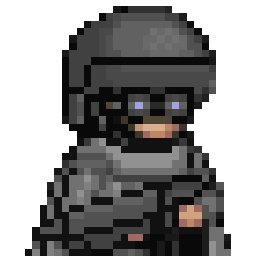
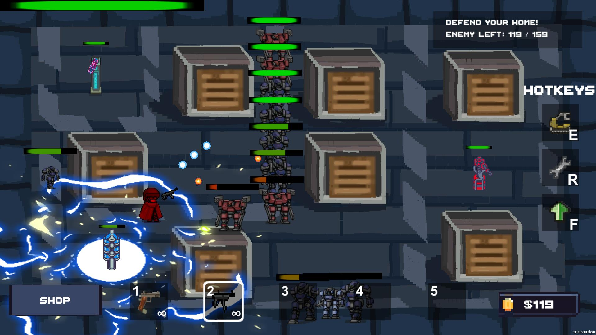
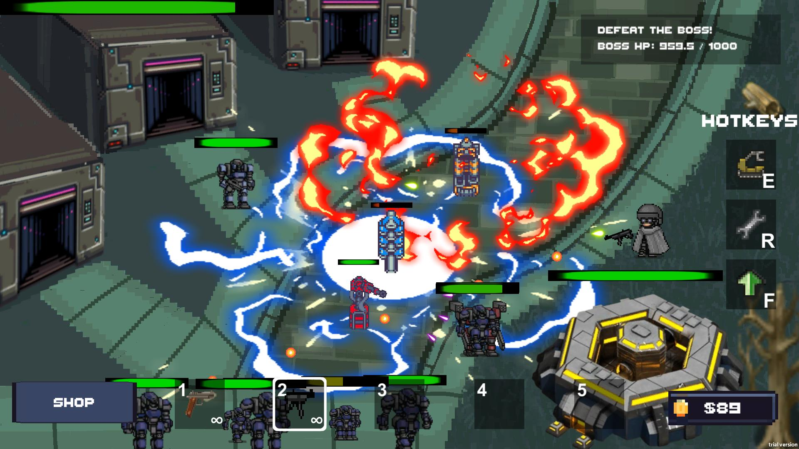
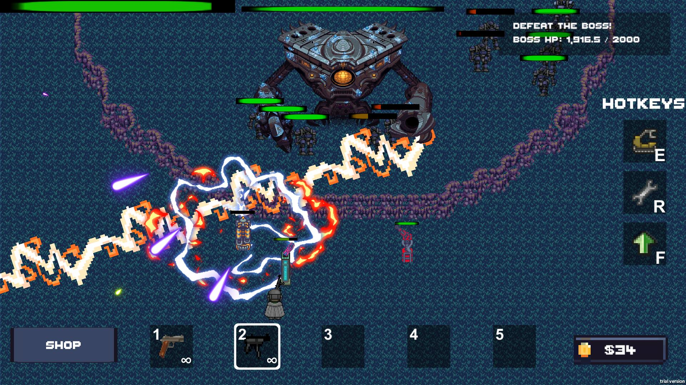

<table border="1" width="100%" bordercolor="#404040">
<tr>
    <td align="center" style="text-align:left;">
      <br/>
      <p></p>
      <b>Developers</b></br>
      Zhang Rujia<br/>
      Ian Chong<br/>
      Cai Muzhen<br/>
      Su Ye<br/>
    </td>
    <td>
      <p><b><u>TurretAgent</u></b></p> 
      <p>Defend your base with turrets and guns in your hands!</p>
      <p>
      TurretAgent is a single-player 2D top-down tower-defense game combining barrage shooting RPG elements. Your role in the game 
      is an elite soldier and engineer, defending against an onslaught of out-of-control robots. As a turret fanatic, your companions
      are only turrets in addition to the weapons in your hands.Deploy, move and upgrade your turrets in various locations; dodge 
      bullets from enemies; manage resources carefully to make the most of them; defend your base, or destroy your enemy's base!
      </p>
      <p>
      <a href="https://docs.google.com/presentation/d/1T2dcOO86Y3zjmVhVjkuf2DmuYfn7Sbpx/edit?usp=sharing&ouid=110281987253646263735&rtpof=true&sd=true">Game Proposal</a>
      &nbsp; &nbsp; &nbsp; &nbsp;
      <a href="WebGL/">Click to Play</a><br/>
      <p></p>
      <iframe width="560" height="340" src="https://www.youtube.com/embed/ayVFR1ExDc0" frameborder="0" allow="accelerometer; autoplay; clipboard-write; encrypted-media; gyroscope; picture-in-picture" allowfullscreen></iframe>
      <p></p>
      
      
      
      
      
    </td>
  </tr>
 </table>
